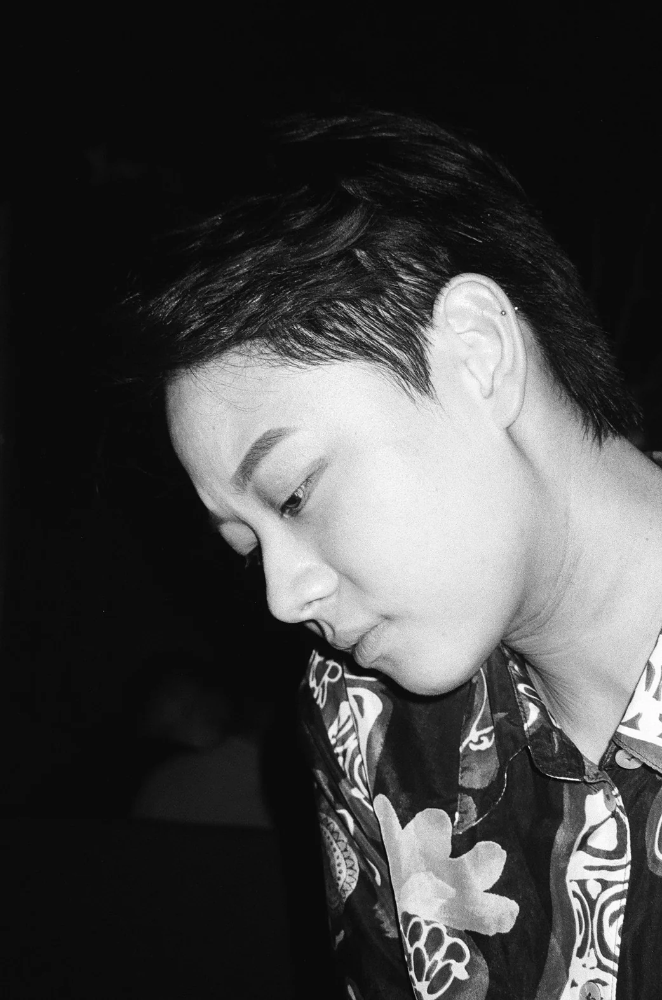

UI/UX Designer. Visual Systems. Prototyping.
About
Fuyu Tsai
01

Hi，我是 Skai，有六年品牌與視覺設計經驗，目前的作品聚焦於品牌官網與網站介面。
我設計了已上線的 III Awards Agency 與 III Design Studio 官網，也完成了 Acer 和 Michelin Guide 的官網概念改版。在 Acer 專案裡，我重新規劃了筆電的分類、篩選與比較流程，並製作桌面與手機版的介面及互動原型。
在 DECO TV 的三年，我負責雜誌與活動的視覺設計，也管理國際設計獎項的送件專案。從確認參賽資料到安排送件時程，我統籌超過 800 件參賽作品，協助其中 48 件獲得 iF Design Award。
接下來，我希望以網站與 UI 設計為主要方向，把品牌視覺的經驗用在頁面與介面設計上，並參與專案從規劃到上線的過程。
UI/UX Design
Visual & Brand
Website
Project Execution
Tools
經歷大事紀
2019
國立臺灣藝術大學
圖文傳播藝術學系 畢業
2019 — 2022
宇思文化 Design Box
美術設計
品牌與廣告視覺設計
2022 — 2023
id SHOW ｜ 亞洲建築
平面設計
建築媒體數位刊物與活動視覺設計
2023 — 現在
DECO TV
資深美術設計 · 獎項專案管理
三年統籌 800+ 件國際獎項作品的進度與交付，協助 48 件作品獲得 iF Design Award。
2024 — 現在
自由接案
品牌與 UI 設計
Selected
Freelance Work
- 秀泰影城 制服設計（與 Ocean Design 合作）
- 加拿大國際學校 TSC 制服設計（與 Ocean Design 合作）
- 中國端子 制服設計（與 Ocean Design 合作）
- 扶輪社 高爾夫球隊隊徽
- Ocean Design 品牌識別 CI 設計
- 宜蘭奇麗灣珍奶文化館 專案視覺設計